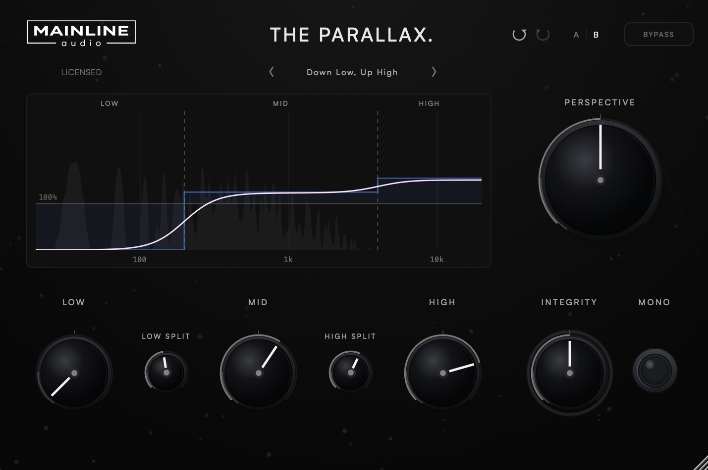

Mainline Audio
Three-Band Stereo Enhancer
Stereo width, handled by frequency region rather than all at once. Low, Mid and High each get their own width control, Perspective scales all three together, and Integrity watches stereo correlation and pulls widened bands back when the image starts to work against itself.
Available Now
$49

Low, Mid and High each carry their own width control, split by two crossovers you set yourself. Narrow the low end and open the top without one decision forcing the other.
One control that scales all three bands at once, for pulling the whole image in or pushing it out after the balance between bands is already set.
A correlation-driven restraint. As stereo correlation falls, Integrity pulls widened bands back toward their original width, and the ring around the knob brightens as it applies more.
A width-response display that shows what you set against what is actually being applied, a factory preset bank, A/B comparison between two full parameter snapshots, and undo/redo across every control.
A single width control treats a kick drum and a cymbal as the same problem. The Parallax splits the signal at two crossover points you choose — Low/Mid anywhere from 60 Hz to 1 kHz, Mid/High from 1 kHz to 12 kHz — and gives each region its own width. Keep the low end tight while the top opens up, or widen the mids alone and leave everything else exactly as it came in. Each band runs from 0% to 200%: 100% is unchanged, 0% collapses that band to mono, and 200% doubles its stereo difference (Side) signal.
The crossovers are Linkwitz-Riley, 24 dB per octave, so the bands overlap through the transition rather than switching at a hard frequency split.
Widening is easy to overdo, and the moment it stops working is usually audible before it is visible. Integrity measures stereo correlation and pulls widened bands back toward their original width as correlation falls, so the less correlated a passage becomes, the less extra width survives. Bands at or below 100% after Perspective are left alone. At 0% Integrity does nothing; at higher settings the restraint grows, and the pink ring around the knob brightens as more of it is being applied.
The width-response display draws three things at once, so the difference between your settings and the result is visible while you work.
| Low / Mid / High Width | 0% – 200% (default 100%) |
| Perspective | 0% – 200% (default 100%) |
| Integrity | 0% – 100% (default 50%) |
| Low/Mid Crossover | 60 Hz – 1 kHz (default 300 Hz) |
| Mid/High Crossover | 1 kHz – 12 kHz (default 3 kHz) |
| Mono | All bands to 0% width |
| Crossovers | Linkwitz-Riley, 24 dB / octave |
| Display | Width response, set vs. applied, with input spectrum |
| Workflow | Factory presets, user presets, A/B compare, undo/redo |
| Latency | Zero — no lookahead or oversampling |
| Channels | Mono and stereo |
| Formats | AU / VST3 |
| Platform | macOS · Apple Silicon & Intel (Universal) |
| Version | 1.0.0 |
VST3 & AU · macOS · Apple Silicon & Intel
Join the List
A three-band stereo enhancer. The signal is split into Low, Mid and High at two crossover points you set, each band gets its own width control, Perspective scales all three together, and Integrity restrains widened bands as stereo correlation falls.
Because low and high frequencies rarely want the same treatment. Three bands let you keep the low end tight while opening the top, or widen the mids alone, without one decision forcing the other.
It measures stereo correlation and pulls widened bands back toward their original width as correlation falls. It acts only on width above 100% after Perspective, pulls toward 100% and never below it, and does nothing at 0%. The ring around the knob brightens as more restraint is applied.
No. Mono takes every band to 0% width as part of the processed signal, so it is recorded and rendered like any other setting. Neither Perspective nor Integrity overrides it.
No. The grey spectrum is drawn from the input signal to help you place the split frequencies. Only the blue band settings and the pink resulting width describe processing.
VST3 and AU on macOS (Apple Silicon & Intel, Universal). AAX / Windows are not currently supported.
Up to 2 computers that you own or control.
Educational and institutional licensing may be available for schools, labs, and training facilities. Contact Mainline Audio for details.
Yes. A fully functional 14-day demo — the same AU/VST3 installer as the paid version — runs with no audio interruptions, muting, or feature restrictions. Get it through the free demo checkout above; you’ll receive download access by email. Once installed, choose Start 14-Day Demo when you open The Parallax. No payment or license key required.
The Parallax checks once, shortly after you open it, for a newer stable version. If one is available, an UPDATE AVAILABLE badge appears; clicking it opens this page. The checker only reads the public version manifest—it never downloads or installs software and does not transmit license, project, or usage data. If the check cannot be completed, nothing appears.